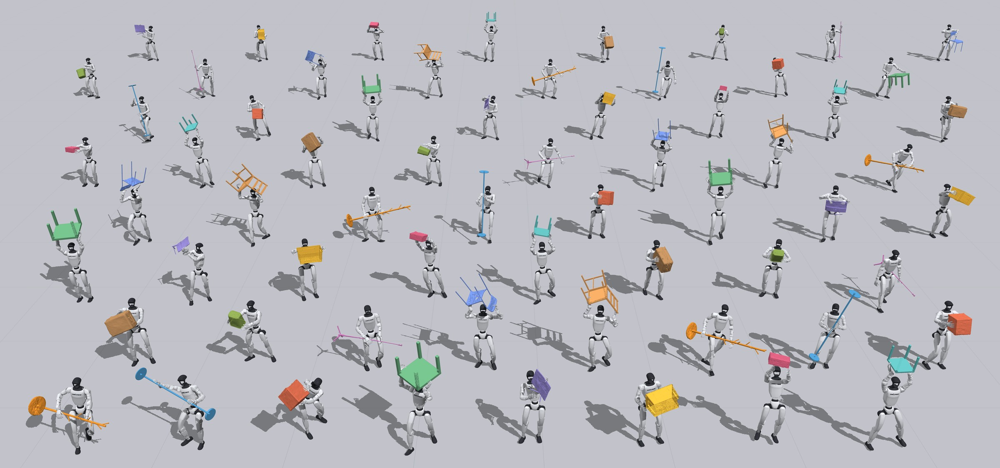
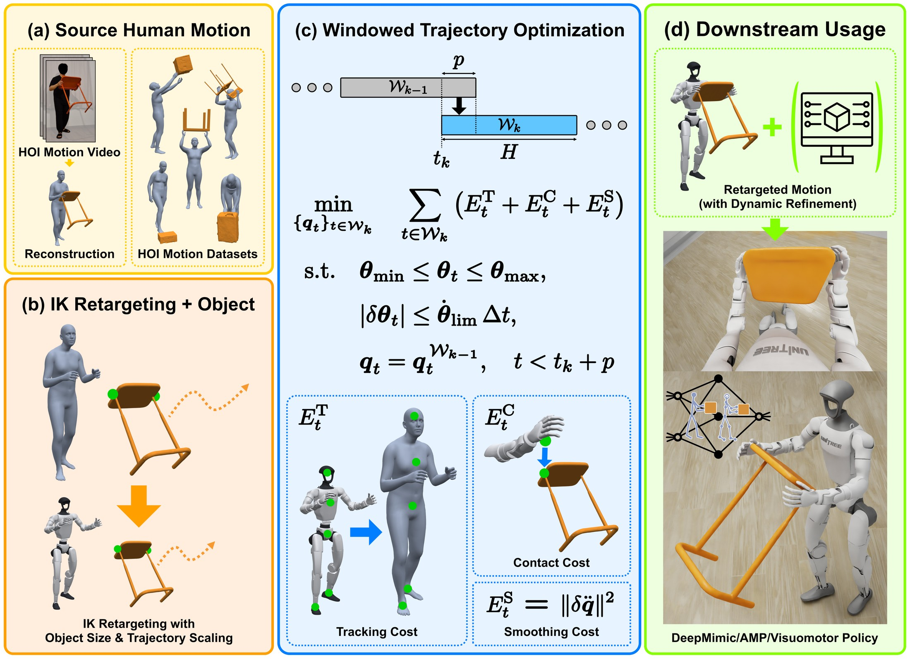
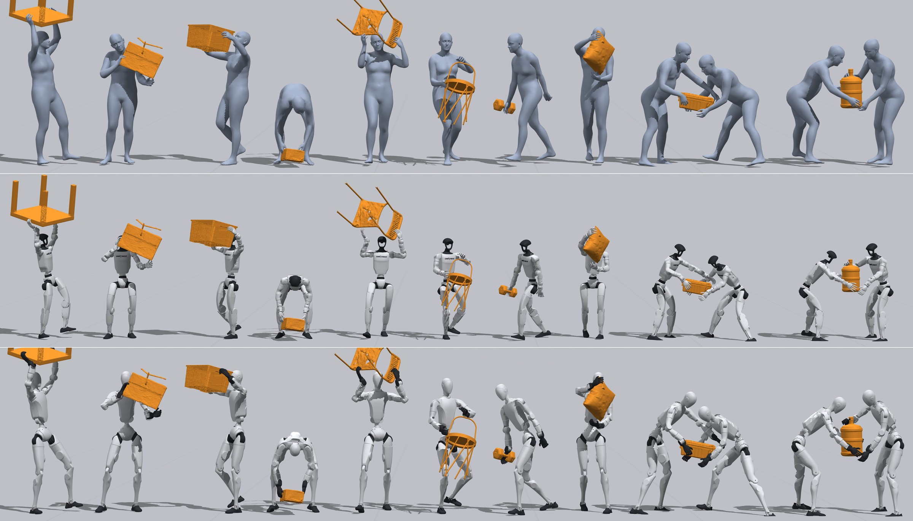
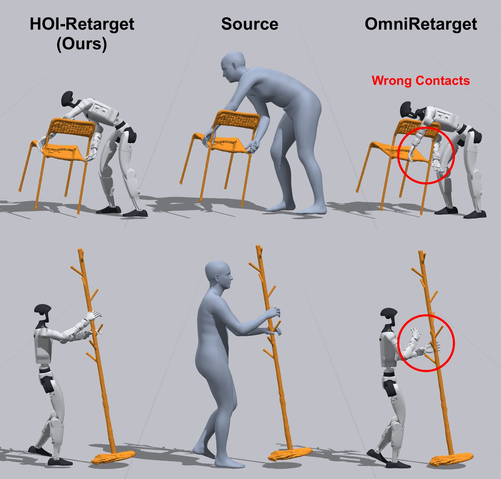
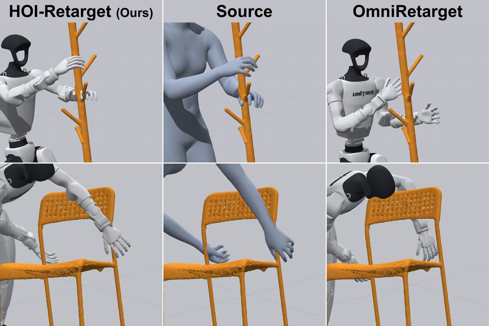
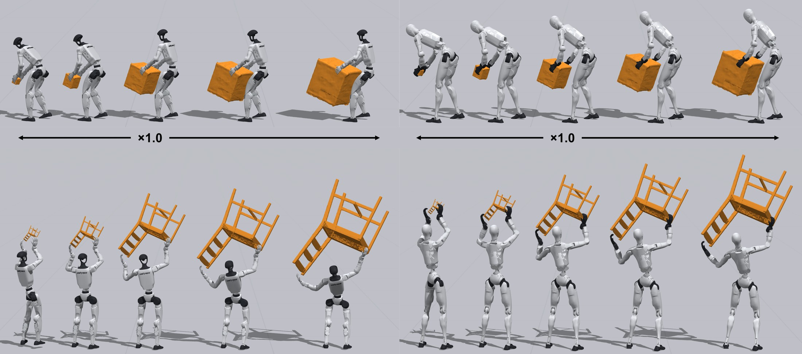

Transferring human-object interaction onto humanoid robots while preserving where and when the object is touched.
Anonymous Authors
Under review, ICRA 2027
Author and affiliation details withheld for double-blind review

Imitating retargeted human motion with reinforcement learning (RL) is a dominant recipe for teaching humanoid robots whole-body skills, but it is data-hungry and largely confined to object-free motion. Retargeting human-object interaction (HOI) is markedly harder: the pipeline must bridge the human-robot embodiment gap yet existing methods handle only simple objects such as boxes without faithfully preserving contact.
We present HOI-Retarget, a contact-centric retargeting method that transfers HOI onto a humanoid robot for large-scale motion-data generation. It uses windowed trajectory optimization with tracking, contact and smoothing costs that is able to retarget HOI while preserving accurate contacts. The method is able to generate datasets consisting of diverse objects and motions, as well as object size augmentations and multi-robot collaboration. Evaluated against retargeting baselines, HOI-Retarget preserves object contact substantially better at a lower compute cost.
Method
Body pose alone is not enough. Because humans and humanoids differ in proportions, joint structure and reach, matching poses independently can slide a hand off the object, move it to a functionally different surface, or push it through the mesh. HOI-Retarget instead optimizes directly against the contact the human made.

Each modeled active source contact is expressed as a target in the object frame rather than in the world. The optimization then drives the robot's palm to that point, so the grasp lands on the surface the human actually used — and it re-anchors automatically when the object is rescaled.
Body-motion tracking, contact alignment, foot support and temporal smoothness are balanced under joint-position and velocity limits. Overlapping windows couple consecutive frames while keeping memory bounded, so long clips stay tractable.
Contact annotations recovered from monocular video are frequently wrong. An optional interactive tool lets the target location and time interval of each contact segment be corrected before the optimization runs.
Results
The full OMOMO dataset retargeted to two humanoid platforms. Every clip below shows the same motion on the human source and both robots, under a shared camera.
The same contact-centric formulation transfers to a second embodiment with different proportions and joint limits, with no per-robot retuning.

Generality
The same pipeline runs on other HOI sources without modification. Because the optimization is anchored in the object frame, several actors can be solved against one shared object trajectory — which is what makes multi-robot collaboration fall out for free.
Single-actor clips from three public HOI datasets, plus two collaborative two-actor sequences retargeted onto a pair of G1s sharing one object.
Comparison
Interaction-aware retargeting preserves the overall body-object geometry, but does not minimize the error to each individual source contact. On objects with thin or spatially localized grasp regions the hand ends up somewhere the human never touched.
OmniRetarget loses the original grasp, producing a motion that no longer represents the intended interaction. HOI-Retarget keeps the hand on the surface the human used.


| Metric | GMR | OmniRetarget | Ours |
|---|---|---|---|
| Body pose deviation (°) ↓ | 22.5 | 30.6 | 24.6 |
| Link velocity direction (°) ↓ | 19.4 | 28.9 | 25.2 |
| Contact-point gap (m) ↓ | 0.368 | 0.183 | 0.005 |
| Hand contact F1 ↑ | 0.197 | 0.295 | 0.734 |
| Body jerk (m/s3) ↓ | 66.7 | 193.5 | 49.9 |
| Compute time (s/clip) ↓ | 3.8 | 157.5 | 37.4 |
Data generation
One captured motion becomes many. Because contacts live in the object frame, they scale with the object — so a shrunk or grown object is still grasped at its intended location rather than being clipped through or held in mid-air.
The same source clip retargeted onto the Unitree G1 across five object scales, from a quarter to one-and-a-half times true size.

In the wild
A single hand-held video of a person moving an unseen table, reconstructed into HOI meshes and trajectories and then retargeted. Video reconstruction gives noisy contact annotations; the interactive correction tool fixes the target and interval of each contact segment before optimization, and a clean kinematic result follows.
tools/build_media.sh and rerun it.
Downstream
The kinematic retarget is a reference, not a controller. Passing it through a physics refiner removes the remaining artifacts and yields a dynamically feasible trajectory that can be used directly for reference-state initialization in downstream RL.
Left trajectory-optimization refiner · Center the kinematic HOI-Retarget reference both refiners start from · Right RL tracker rollout. Panel labels are burned into these renders and still say “DynaRetarget / Source / HOI-Retarget-Dyn” — re-render before publishing.
| Metric | RL tracker — Omni. | RL tracker — ours | SBTO — Omni. | SBTO — ours |
|---|---|---|---|---|
| Body pose deviation (°) ↓ | 33.5 | 29.7 | 33.2 | 28.7 |
| Link velocity direction (°) ↓ | 37.4 | 35.1 | 40.5 | 39.5 |
| Object path error (m) ↓ | 0.285 | 0.213 | 0.269 | 0.194 |
| Contact-point gap (m) ↓ | 0.096 | 0.086 | 0.141 | 0.099 |
| Hand orientation on object (°) ↓ | 31.5 | 25.3 | 38.4 | 28.1 |
| Body jerk (m/s3) ↓ | 90.8 | 85.8 | 58.2 | 55.4 |
Release
We release the pipeline together with a dataset of robot HOI clips, intended as reference motion for downstream reinforcement learning.
Anonymized entry for the review period.
@article{hoiretarget2026,
title = {HOI-Retarget: Contact-Centric Retargeting for Human-Object Interaction},
author = {Anonymous},
note = {Under review, ICRA 2027},
year = {2026}
}